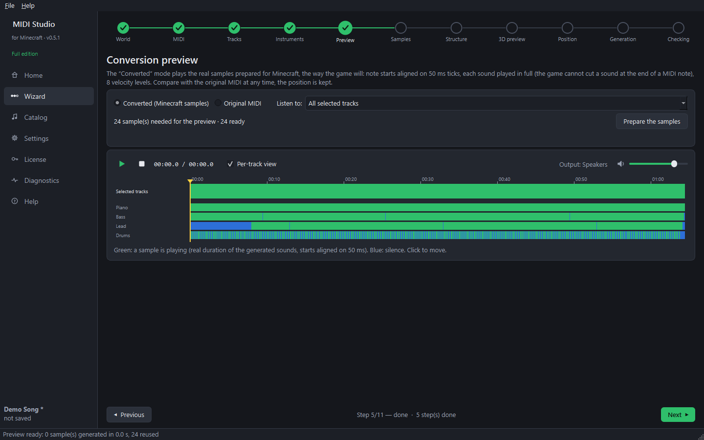
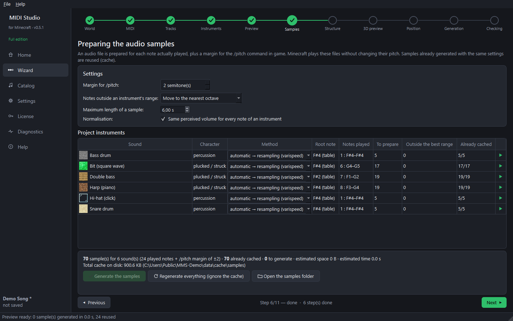

Step 7 — Preview and samples (wizard steps 5 and 6)
Goal: hear the real Minecraft result, then prepare all the audio files.
Preview (step 5)

- The samples needed for the preview are prepared automatically (the first time takes a few seconds).
- Converted (Minecraft samples) plays the song as the game will: notes aligned on 50 ms ticks, each sound played in full, 8 velocity levels.
- Original MIDI switches back to the original at the same position, to compare.
- Listen to lets you hear one track only.
Samples (step 6)

One audio file is prepared for each note actually played, so Minecraft never has to change the pitch of a sound (that is what makes the result clean).
- Margin for /pitch — extra notes so that the in-game
/function music:pitchcommand always finds a sample. - Notes outside an instrument's range — moved to the nearest octave, skipped, or generated anyway.
- Maximum length of a sample — long sounds are shortened with a fade.
- Normalisation — same perceived volume for every note of an instrument.
- Method per instrument — resampling (classic note block sound) or pitch only (keeps the duration, better for voices).
Click Generate the samples. Samples already made with the same settings are reused from the cache.
Next guide: the structure.